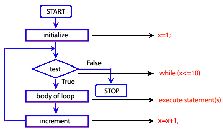

Looping
Go back to homepageA loop is a sequence of statements which is specified once but which may be carried out several times in succession. The code "inside" the loop (the body of the loop, shown below as xxx) is obeyed a specified number of times, or once for each of a collection of items, or until some condition is met, or indefinitely. In functional programming languages, such as Haskell and Scheme, loops can be expressed by using recursion or fixed point iteration rather than explicit looping constructs. Tail recursion is a special case of recursion which can be easily transformed to iteration.
Here's an example:

